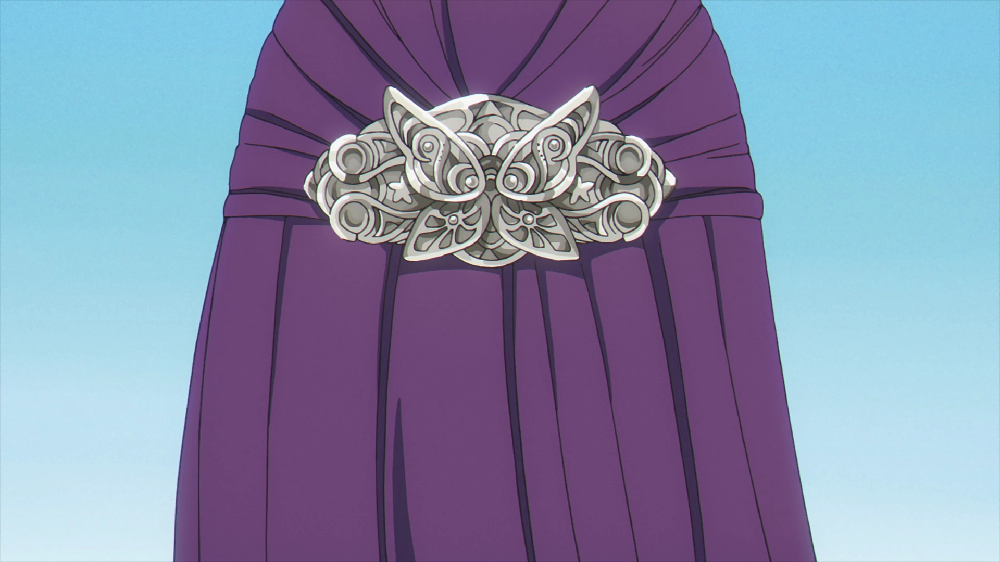

Personality
Fern has a mature personality as a result of her upbringing, leading her to often act as the mother of the party. She constantly has to help Frieren perform ordinary tasks such as waking her up due to her being a deep sleeper, feeding her, and dressing her,[2] along with cleaning up her messes.[3][4] She acts similarly around Stark, such as getting mad when he stays up late, even though they are around the same age.
Fern's tendency to pout.
Despite her outward motherly nature, Fern is easily upset and can act childish when others don't cater to what she wants or offend her, and in extreme cases, pouting and completely ignoring them when they attempt to reconcile, though this can be resolved through actions like treating her with food and abiding by demands she makes. She also has a habit of following around and watching others when she is suspicious or curious about them instead of confronting them directly, as seen when she stalks Frieren after suspecting her of making poor financial decisions and investigating Stark when she struggles to find a suitable birthday gift for him.
Fern is also a very loyal apprentice and has the discipline to train incredibly hard since she was young so she can manage on her own, ultimately becoming a powerful mage acknowledged by Frieren. She rarely cracks under pressure and is able to keep a level head in combat despite receiving injuries and battling opponents that are more powerful or experienced than her. Her devotion to learning magic stems from the loss of her parents at an early age and her subsequent adoption by Heiter; after nearly commiting suicide after her parents' death, she was stopped by the priest, who advised her to stay alive for the sake of keeping the good memories she had. As a result, she became extremely dedicated with the maturity to learn magic and prove to Heiter that he could pass peacefully without any regrets and without worrying about her. Fern clings to magic, as in a situation where she cannot rely on it, she feels as though she has been thrown into darkness.
Appearance
Fern is a young human with purple eyes and long, waist-length purple hair with bangs. She usually wears her hair down with two additional chest-length strands framing her face in a hime-style haircut and partially tied back. After turning sixteen, Fern grew to be taller than Frieren and with a more developed figure. As a result of her mature and calm personality, she frequently wears a stoic expression and rarely expresses strong emotions. Her facial features are characteristic of those from the Southern Lands.

Fern's butterfly hair ornament, a gift from Frieren.
During her travels with Frieren, Fern is most commonly seen wearing a long, buttoned white dress with a Victorian top, including a frilled collar and puffy white sleeves, along with black boots. When outdoors, she also dons a long, black coat with a hood, which has a gray inside layer. For Fern's sixteenth birthday, Frieren gifted her a butterfly hair ornament, which Fern regularly wears on the back of her head to partially tie her hair back.[6] Fern also frequently wears a mirrored-lotus bracelet on her left wrist, gifted to her by Stark for her eighteenth birthday.
| Character Information |
| Japanese Name |
フェルン |
| Romaji |
Ferun |
| Gender |
Female |
| Age |
9 (Chapter 2) |
| 13 (middle of Chapter 2) |
| 15 (Chapter 3) |
| 16 (Chapter 4) |
| 16–17 (Chapter 6) |
| 18 (Chapter 29) |
| 19–20 (current) |
| Species |
Human |
| Class |
Mage |
| Rank |
Third-Class (former) |
| First-Class (Chapter 60) |
| Affiliation |
Frieren's Party, 4th Party (First-Class Mage Exam - First Stage) |
| Relatives |
Heiter (adoptive father, deceased) |
| Unnamed parents (deceased) |
| Status |
Alive |
| Hair Color |
Purple |
| Eye Color |
Purple |
| Series Debut |
Manga: Chapter 2
Anime: Episode 1 |
| Voice Actors |
Japanese: Kana Ichinose
English: Jill Harris |